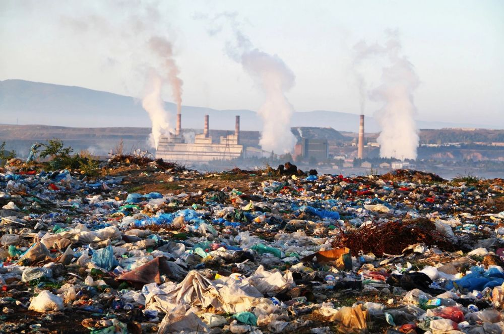

Mengenal masalah lingkungan dan pentingnya menjaga bumi
01
Apa Itu Pencemaran?

Lingkungan tidak memiliki tombol “reset”. Ketika udara tercemar, sungai dipenuhi limbah, dan tanah terkontaminasi, kerusakan yang terjadi tidak selalu dapat dipulihkan dengan mudah. Karena itu, pencemaran lingkungan menjadi salah satu masalah yang semakin penting untuk diperhatikan, terutama di Indonesia. Pencemaran lingkungan adalah perubahan besar pada kondisi lingkungan akibat adanya perkembangan eknomi dan teknologi. Perubahan kondisi tersebut melebihi batas ambang dari toleransi ekosistem sehingga meningkatkan jumlah polutan di lingkungan. Menurut HaloDoc, Pencemaran lingkungan disebabkan oleh aktivitas manusia dan beberapa faktor alami yang mengakibatkan perubahan signifikan pada ekosistem. Untuk mengatasi masalah ini, diperlukan pendekatan administratif, teknologi, dan edukasi untuk mengurangi dampaknya serta meningkatkan kesadaran masyarakat.
Beberapa contoh penyebab adanya pencemaran lingkungan adalah Limbah pabrik, sampah rumah tangga, dan sisa pestisida pertanian untuk pencemaran air. Selanjutnya terdapat asap kendaraaan, emisi pabrik, pembakaran sampah, serta abu vulkanik gunung berapi untuk pencemaran udara. Terakhir sampah plastik susah terurai, pupuk kimia berlebihan, dan tumpahan zat beracun (B3) untuk pencemaran tanah.Dampak terjadinya pencemaran terhadap lingkungan kita seperti ekosistem, kualitas air, kesuburan tanah ada banyak. Pertama, rusaknya rantai makanan dan memicu eutrofikasi sehingga oksigen air abis, lalu terdapat kematian masal satwa akibat plastik/minyak dan merusak jaringan daun akibat hujan asam. Selanjutnya, memicu krisis air bersih akibat kontaminasi logam berat dan bakteri berbahaya. Keempat, membunuh mikroorganisme pengurai dan mengubah pH tanah. Terakhir, mempercepat kepunahan spesies dan mengurangi variasi makhluk hidup di suatu wilayah.
02
Jenis-Jenis Pencemaran
Pencemaran Air
Pencemaran air adalah kondisi ketika air tercemar oleh bahan berbahaya, seperti limbah rumah tangga, limbah industri, minyak, bakteri, dan logam berat.
Pencemaran Udara
Pencemaran udara adalah kondisi ketika udara tercampur dengan zat atau partikel berbahaya, seperti asap kendaraan, asap pabrik, PM2.5, dan gas beracun.
Pencemaran Tanah
Pencemaran tanah adalah masuknya zat atau bahan berbahaya ke dalam tanah, seperti sampah, pestisida, bahan kimia, dan limbah industri.
Pencemaran Suara
Pencemaran suara adalah kondisi ketika lingkungan mengalami kebisingan yang berlebihan atau terus-menerus, misalnya dari kendaraan, mesin, pabrik, dan kegiatan konstruksi.
Pencemaran Radius
Pencemaran radiasi adalah kondisi ketika lingkungan terpapar radiasi berlebihan yang berasal dari sumber tertentu, seperti bahan radioaktif atau kegiatan industri dan medis.
03
Dampak Pencemaran
Pencemaran lingkungan dapat memberikan berbagai dampak terhadap kesehatan manusia. Pencemaran udara dapat menyebabkan gangguan sistem pernapasan dan kardiovaskular, seperti asma, penyakit paru-paru, penyakit jantung, dan stroke. Pencemaran air dapat menyebabkan gangguan pencernaan dan keracunan, seperti diare, kolera, dan disentri, terutama jika air atau makanan terkontaminasi bakteri. Pencemaran tanah dapat menyebabkan manusia terpapar zat berbahaya melalui makanan yang berasal dari tanah tercemar, sehingga dapat mengganggu organ tubuh dan kesehatan dalam jangka panjang. Pencemaran suara dapat menyebabkan gangguan pendengaran, tinnitus, sulit tidur, stres, dan menurunkan konsentrasi. Sementara itu, pencemaran radiasi dalam paparan berlebihan dapat merusak sel dan jaringan tubuh serta meningkatkan resiko gangguan kesehatan tertentu.
04
Apa yang Bisa Kita Lakukan?
Di Indonesia, pencemaran lingkungan juga terlihat dari besarnya permasalahan sampah yang belum terkelola dengan baik. Berdasarkan Kementrian Lingkungan Hidup/Badan Pengendalian Lingkungan Hidup, Indonesia menghasilkan sekitar 56,63 juta ton sampah pada tahun 2023. Dari jumlah tersebut, sekitar 34,54 juta ton atau 60.99% belum dikelola. Sampah yang tidak terkelola dapat mencemari tanah dan sumber air serta berpotensi masuk ke ekosistem laut. Besarnya jumlah tersebut menunjukkan bahwa pencemaran lingkungan di Indonesia bukan hanya terjadi karena perilaku individu, tetapi juga berkaitan dengan sistem pengelolaan sampah secara keseluruhan. Oleh karena itu, diperlukan pengelolaan sampah yang lebih efektif melalui pengurangan, pemilahan, penggunaan kembali, dan daur ulang.


.jpg)

.jpg)